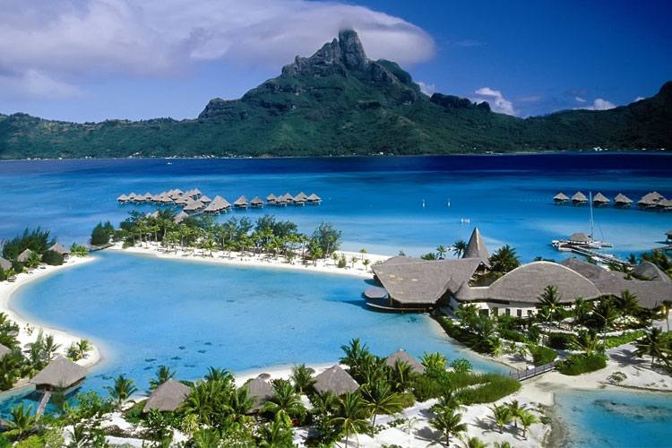
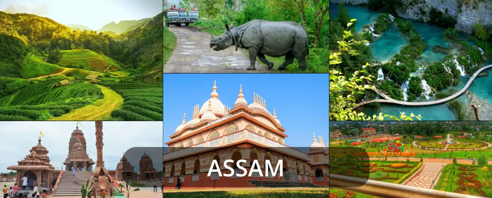

Welcome to Shaik Thoukheer's Web page


Andaman and Nicobar Islands
Andaman and Nicobar Islands are closer to Thailand and Myanmar. The best time to visit the Islands is between October and May. The region boasts a rich tribal culture and a variety of festivals including the Beach Festival, Food Festival, Film Festival, and Monsoon Music Festival, which draw tourists from around the globe.
Tourists should visit Neil Island, Port Blair, Baratang Island, and Little Andaman, among other popular spots. Port Blair serves as the main gateway to the Andaman Islands and is well-connected by air and sea. Local transportation includes affordable buses and taxis.
Capital City: Port Blair
Places to Visit:
- Radhanagar Beach: Known for its stunning sunsets and clear blue waters.
- Havelock Island: Famous for its scuba diving spots.
- Cellular Jail: A historical site that played a significant role in India's struggle for independence.
- Barren Island: Home to South Asia's only active volcano.
Andhra Pradesh

Andhra Pradesh is a destination with eco-friendly attractions including caves, rivers, and hills, making it a paradise for explorers. The best time to visit is from October to February. The state blends royal heritage with Nizami traditions and is renowned for its spicy South Indian cuisine and biryani. The Pongal festival is a major event supported by the tourism ministry.
Capital City: Amaravati
Places to Visit:
- Amaravati: Known for its ancient Buddhist sites and the new capital's planned cityscape.
- Araku Valley: A beautiful hill station known for its scenic landscapes and coffee plantations.
- Borra Caves: Famous for their stalactites and stalagmites formations.
- Visakhapatnam (Vizag): A coastal city with beautiful beaches, the INS Kursura Submarine Museum, and Kailasagiri Hill Park.
- Gandikota: Often referred to as the "Grand Canyon of India" for its spectacular gorge formed by the Pennar River.
Arunachal Pradesh

Arunachal Pradesh, situated in the northeastern part of India, is known as the "Land of the Rising Sun." The best time to visit is from October to April. The state has a diverse cultural landscape with Buddhist, Hindu, and indigenous groups. Thukpa is a famous local dish. The Losar Festival is celebrated by the Monpa tribe.
Capital City: Itanagar
Places to Visit:
- Tawang: Known for its beautiful monastery and scenic landscapes.
- Bomdila: Offers breathtaking views of the Himalayan ranges.
- Ziro: Famous for its music festival and picturesque valley.
- Namdapha National Park: A biodiversity hotspot.
Assam
Assam is often referred to as the "Queen of the North East" and is a prime tourism destination in India. Visiting during the Bihu Festival is highly recommended. The best times to visit are March and October. The state is known for its lush landscapes and rich culture. The Kamakhya Temple and the sight of the Brahmaputra River are major attractions. Assam is also famous for its tea gardens.
Capital City: Dispur (Guwahati is the largest city and a major gateway)
Best Tourist Attractions:
- Kaziranga National Park: Home to the one-horned rhinoceros.
- Pobitora Wildlife Sanctuary: Known for its high density of rhinos.
- Kamakhya Temple: An important pilgrimage site.
- Umananda Temple: Located on Peacock Island in the middle of the Brahmaputra River.